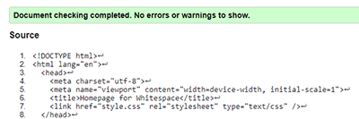
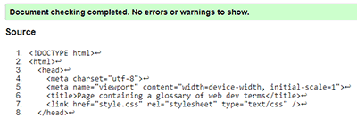
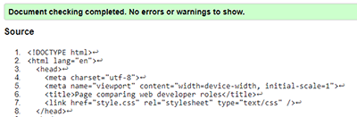
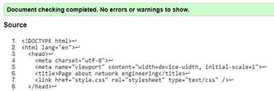
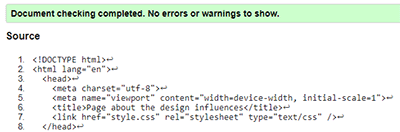
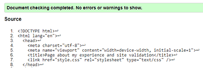
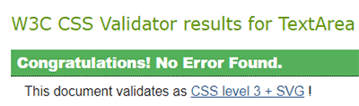

My Experience
When starting off with web development most of the concepts that I was going through I thought I understood. However when it came to developing my website for the assignment I was wrong. The first step I took to developing my website was to look at other websites for design features. There were various websites which influenced my design (refer to the design page). These websites primarily use white as a background to then put content on top to make it stand out more. Secondly they use a black header and footer to easily identify where the edges of the page are. I took those design features and implemented that into my pages as this made selecting colours to use easier.
The first thing I did when making the website was producing a standard layout for the website which would be used on every page, then creating space for the content of each page to go. Then I made my navigation buttons on the side for navigating the site. Then I made my footer, this is where I encountered my first major problem. Originally my footer was displayed in a fixed location at the bottom of the page, however after some research I made my footer display permanently but appear larger when hovered over. This footer then contained a form which I have used to have a feature for users to contact me (which doesn’t actually work).
When adding content for each of my pages there were different problems encountered each time. The home page needed images for the team members, these needed optimising to be a small enough small size, so each were around 10KB. The glossary layout didn’t work originally so instead I chose to use a table to match the term with the definition, and many other problems. However, through a lot of research, trial and error and help from colleagues I managed to completed my website. I have also not used any code directly from other sources, other than adapting very basic functional requirements for such things as the form, hovering footer, title gradient, the glossary table and the overall layout of the page to fit my needs.
In conclusion, the week-to-week development of the website was slow, due to not quite understanding how things worked, however with help from other people and taking the time to think about things I eventually completed it.
Links and screenshots of websites viewed on design page.
Site Validation
Below is screenshots of the validation results for every page (in order) and the css.






